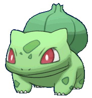
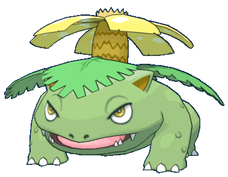
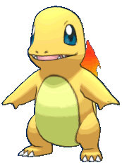
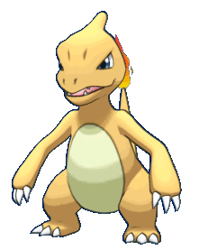
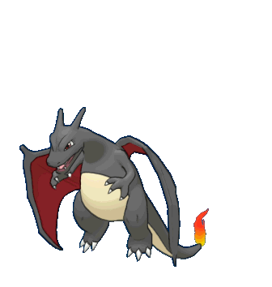
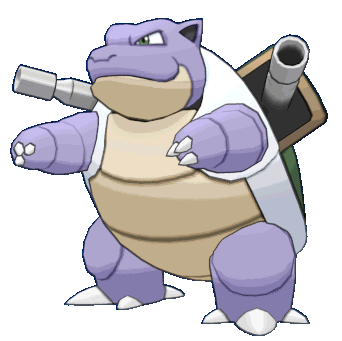
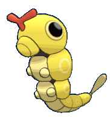

-
Bulbasaur #001
- Grama
- Veneno
Bulbasaur pode ser visto cochilando sob a luz do sol. Há uma semente em suas costas. Ao absorver os raios do sol, a semente cresce progressivamente.
-
Ivysaur #002

- Grama
- Veneno
Há um botão nas costas deste Pokémon. Para suportar seu peso, as pernas e o tronco de Ivysaur ficam grossos e fortes. Se ele começar a ficar mais tempo exposto ao sol, é sinal de que o broto vai se transformar em uma grande flor em breve.
-
Venusaur #003
- Grama
- Veneno
Há uma grande flor nas costas de Venusaur. Diz-se que a flor adquire cores vivas se receber muita nutrição e luz solar. O aroma da flor acalma as emoções das pessoas.
-
Charmander #004
- Fogo
A chama que queima na ponta de sua cauda é uma indicação de suas emoções. A chama oscila quando Charmander está se divertindo. Se o Pokémon ficar enfurecido, a chama queima ferozmente.
-
Charmeleon #005
- Fogo
Charmeleon destrói impiedosamente seus inimigos usando suas garras afiadas. Se encontrar um inimigo forte, torna-se agressivo. Nesse estado excitado, a chama na ponta de sua cauda se acende com uma cor branca azulada.
-
Charizard #006
- Fogo
Charizard voa pelo céu em busca de oponentes poderosos. Ele exala fogo de um calor tão grande que derrete qualquer coisa. No entanto, ele nunca vira seu sopro de fogo em qualquer oponente mais fraco do que ele.
-
Squirtle #007

- Água
A concha de Squirtle não é usada apenas para proteção. A forma arredondada da concha e os sulcos em sua superfície ajudam a minimizar a resistência na água, permitindo que este Pokémon nade em alta velocidade.
-
Wartortle #008

- Água
Sua cauda é grande e coberta por uma pelagem rica e espessa. A cauda torna-se cada vez mais escura à medida que Wartortle envelhece. Os arranhões em sua casca são evidências da resistência deste Pokémon como um lutador.
-
Blastoise #009
- Água
Blastoise tem pistolas de água que se projetam de sua concha. As pistolas de água são muito precisas. Elas podem atirar balas de água com precisão suficiente para atingir latas vazias a uma distância de mais de 160 pés.
-
Caterpie #010
- Inseto
Caterpie tem um apetite voraz. Ele pode devorar folhas maiores que seu corpo bem diante de seus olhos. De sua antena, este Pokémon libera um odor terrivelmente forte.